agile life
что это?

— это философия, в которой
ГИБКИЕ ПРИНЦИПЫ
применяются не только в работе, но и в повседневной жизни.
это означает постоянное
улучшение, адаптацию к изменениям и фокус на важных задачах в каждый момент времени.
вместо строгого планирования на долгие периоды agile
life предлагает работать короткими спринтами, регулярно
анализировать результаты
и корректировать курс.
принципы agile life можно применять в работе, учебе,
личных целях и даже отдыхе, чтобы жить осознанно и
эффективно.
КАК AGILE LIFE РЕАЛИЗОВАН
В SPRINTLY

СПРИНТЫ
— короткие циклы работы,
после которых идет анализ
результатов.
ГИБКОСТЬ
— возможность менять фокус,
если приоритеты изменились.
ПРОСТОТА
— минималистичный подход
без лишнего хаоса.
ГЛАВНЫЙ ПРИНЦИП:
ЖИЗНЬ — ЭТО НЕ ЖЕСТКИЙ ПЛАН,
А ПРОЦЕСС, КОТОРЫЙ МОЖНО
УЛУЧШАТЬ И АДАПТИРОВАТЬ.
откуда взялась методика?
Agile Life вдохновлена гибкими методологиями управления проектами, такими как Agile и Scrum, которые изначально применялись в разработке ПО. Эти подходы помогали командам адаптироваться к изменениям, работать короткими циклами (спринтами) и постоянно улучшать процессы.
как это перешло в жизнь?
Со временем люди заметили, что гибкие принципы работают не только в бизнесе, но и в личном планировании. Мы все сталкиваемся с изменяющимися обстоятельствами, новыми целями и корректировкой планов. Agile Life берет лучшее из Agile, адаптируя его к повседневным задачам: учебе, работе, хобби, личному развитию.
добро пожаловать в пространство гибкого планирования. здесь ты создашь свой спринт — персональный план на определенный срок, который поможет тебе двигаться к важным целям без перегрузки и хаоса.
не просто составляем список дел — мы выстраиваем систему, которая делает жизнь осознаннее и продуктивнее. следуй шагам, адаптируй их под себя и наблюдай, как маленькие действия приводят к большим результатам!
01
ВЫБОР ДЛИТЕЛЬНОСТИ СПРИНТА
для начала реши, на какой срок ты хочешь
спланировать свою жизнь. ты можешь выбрать:
МЕСЯЦ
— если хочешь сфокусироваться на конкретных задачах и быстро увидеть первые результаты.
ТРИ МЕСЯЦА
— идеальный вариант для достижения среднесрочных целей и формирования привычек..
ПОЛГОДА
— стратегический подход, который поможет внедрить большие изменения в жизнь.